TRAINING-TIME TESTING / RESEARCH NOTEBOOK
T³ 实验与研究进展
从实验现象到论文证据：每个比较回答什么、我们已经知道什么、下一步为什么值得做。
正在读取实验快照…
现在最重要的两个问题
GPU 实际用途
keep-warm 单独计数T³ 实验其他实验keep-warm未确认
当前实验清单
| 模型 / 域 | 方法 | 外层配置 | 状态 | 进度 | 剩余训练估计 |
|---|
进度以实际 update 日志为准。估计时间不含后续保存、验证和排队；“训练完成”不等于结果已通过科学核验。
学习与遗忘的轨迹
Development · 未接受为外部结果目标域 NLL ↓ 越低越好
FineWeb 遗忘 ↓ 越低越好
横轴是实际训练轮数：step ÷ 单轮 batch 数。遗忘 = 当前 FineWeb NLL − 同一模型的训练前 NLL。不同域、模型和配置不混作一个总体效果。点击图例可隐藏曲线；悬停查看测量值。
下载完整 56 组 development 汇总图（PDF）↗ · 全部终点与 own-zero 差异，已核验；外部评估已完成，见下方独立汇总。
已经接受的证据
共同 recipe 的 one-pass CPT 仍是不利结果
| 外层 LR | 目标域 ΔNLL | FineWeb ΔNLL |
|---|
正文叙事与证据边界保持一致：固定数据预训练的收益，不能替代 CPT 的 matched-learning／forgetting 证据。历史正现象继续保留，但优化器和外层目标的混淆需要配对消融。
Wave 2a · 完整外部评分：尚无实用前沿改善
56条训练 · 384点评分 · 单seed探索过拟合已确认，T³仍未超过完整调参普通前沿
1/32与1/64数学训练子集，均完成6708步。18条普通LR×WD曲线、24条非零半径曲线及6条对应own-zero曲线的8个固定checkpoint全部评分。192个T³点中，没有点达到预定0.001 NLL的普通前沿改善门槛；90/96与87/96个点分别被某个普通checkpoint直接超过。
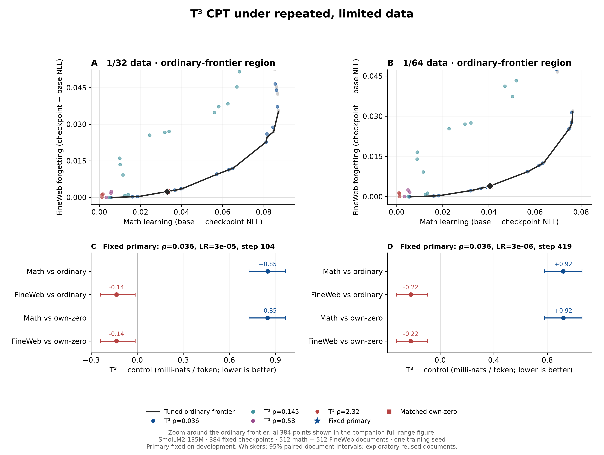
固定主比较中，目标域NLL分别高0.000850、0.000920，FineWeb仅低0.000135、0.000220。最小半径0.036的目标学习最好；半径更大时学习更差。1/32最佳目标点若只比普通训练第5031步，看似少忘0.005120，但普通第3354步在两项上都更好，因此不能计作前沿收益。
512篇数学与512篇FineWeb文档；区间为5000次配对文档bootstrap，不代表训练seed方差。该外部集已在campaign中使用，结果是探索性读出。黑线连接实测普通点，没有用插值点充当对照。完整训练81.312 GPU小时，新增评分3.677 GPU小时。前沿放大 PDF ↗ · 全部384点完整范围 PDF ↗
Lookahead 对照 · 普通学习率细调后仍有小幅收益
6条新训练 · 270点 · 固定候选两种模型通过预定诊断，但仍需独立验证
在135M和360M上，各新增普通CPT学习率7.5e-6、8.75e-6、1.25e-5，其他设置保持一致：固定四分之一数学数据训四遍、20%旧领域TRAIN replay、2048步、seed0。候选保持Lookahead K64、alpha=0.1、LR=1e-4不变。全部270个checkpoint均已评分，并与原有普通LR及早停点一起比较。
| 模型 | 最强兼容普通对照 | 数学 ΔNLL [95%文档区间] | FineWeb ΔNLL [区间] |
|---|---|---|---|
| 135M | LR 8.75e-06 · 1664步 | -0.000887 [-0.001163, -0.000627] | -0.001159 [-0.001350, -0.000980] |
| 360M | LR 8.75e-06 · 1568步 | -0.000667 [-0.000932, -0.000399] | -0.001033 [-0.001181, -0.000910] |
差值为候选减普通对照，负数更好。对照规则在运行前固定：在普通数学NLL不高于候选+0.001的点中，选FineWeb最低者。两种模型的已测普通前沿均没有同时胜过候选的点。135M和360M的保留优势相对此前对照分别缩小15.4%和9.2%；360M的点估计只比0.001门槛多0.000033。
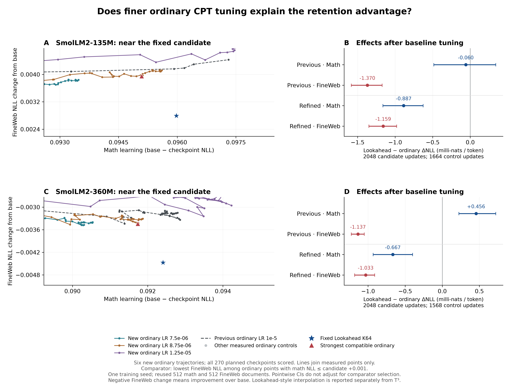
主比较中，候选比新普通对照分别多23.1%和30.6%的更新，不能据此声称计算效率提升。135M确实是更少遗忘；360M两者的FineWeb均优于base，准确表述是旧领域loss更低。此结果属于Lookahead-style interpolation，normalized T³的wave2a null保持不变。
一个训练seed，每域512篇已使用文档；区间未校正对照选择，也不代表seed稳定性。两者的95%区间都包含小于0.001的效果，因此不能说有95%把握超过实用门槛。旧135M三seed结果只验证旧LR1e-5/1376步对照，尚未验证本轮更强对照。下一步先用未观察的新文档验证固定比较，再考虑更多训练seed。本轮训练7.788 GPU小时，评分3.861 GPU小时。前沿放大 PDF ↗ · 完整普通曲线 PDF ↗
Lookahead 对照 · 三个配对 seed 验证通过
6条训练 · 15个固定评分 · 与T³单列平均少忘0.00167 NLL，目标学习通过非劣门槛
固定135M、四遍目标数据、20% replay：三个新训练顺序seed中，FineWeb NLL均降低。平均差−0.001667，95% seed t区间[−0.001990, −0.001344]；数学NLL平均差−0.000157，区间[−0.000773, +0.000459]，通过预定+0.001非劣门槛。seed0用于选择，未计入验证均值。三个seed都没有被已评分的普通对照同时在两项上超过。
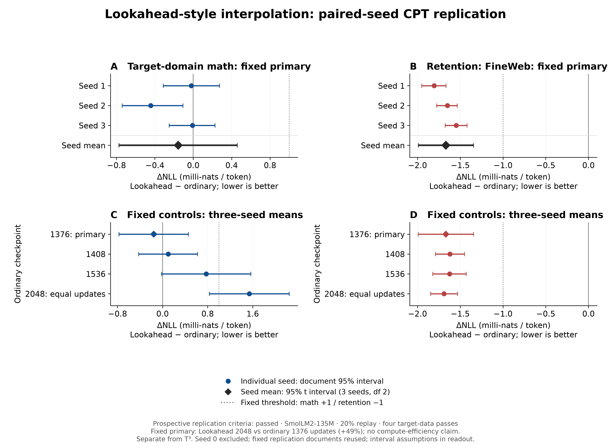
主比较固定为Lookahead第2048步对普通第1376步，前者多约49%更新。同为2048步时，数学loss高0.001540（seed区间+0.000831至+0.002248），FineWeb低0.001689：这是学习—遗忘折中，不能声称计算效率提升。结果归于已有的Lookahead-style interpolation配方，不能归于normalized T³算子，也不代表下游任务准确率提升。
固定base和数据成员，只改变训练顺序；三个seed的t区间假设近似正态。每个seed的细线为配对文档区间，均值区间按seed计算，文档不充当额外seed。新文档曾用于seed0独立检验，现固定复用于验证，未再次调参或换主对照。新增训练5.036 GPU小时，评分0.164 GPU小时，前期调参成本另计。三seed验证 PDF ↗
Lookahead 对照 · 小幅遗忘收益通过独立文档检验
历史seed0 · 后续三seed验证见上方目标域基本不变，FineWeb NLL 降低 0.001446
135M、四遍数据、20% replay 的 K64 候选，在数学与 FineWeb 各512篇预留新文档上，相对预先指定的普通LR=1e-5、第1376步，数学NLL差值为−0.000039（95%配对文档区间−0.000403至+0.000329）；FineWeb差值为−0.001446（−0.001559至−0.001338）。通过预先固定的主检验，未在评分后更换对照。
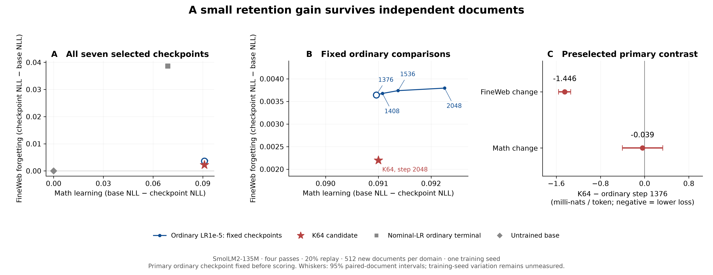
同曝光的普通第2048步对照下，数学代价为+0.001256，FineWeb改善0.001597。主比较使用不同训练步数，因此不能声称计算效率提升。这组结果来自 Lookahead-style interpolation，单独作为插值对照报告，不归为本轮 T³ 算子的收益。
一个训练seed；文档区间不代表seed方差。后续固定配方的3个新配对seed已完成并通过，见上方；seed0不计入验证均值。9项新增评分共0.0975 GPU小时，原共同文档候选评分直接复用。独立文档 PDF ↗
360M · 更密集的普通早停对照
新增68点 · 原权重与评分逐项复现保留收益缩小约13%，仍超过预设0.001门槛
固定Lookahead K64第2048步，对比最强兼容普通对照（LR=1e-5，第1568步）：FineWeb NLL低0.001137（95%配对文档区间−0.001226至−0.001051），数学NLL高0.000456（+0.000224至+0.000721）。数学代价仍在预设+0.001容差内，但这不等于数学表现完全相同或更好。已测普通前沿中，没有同时在两个指标上超过候选的点。
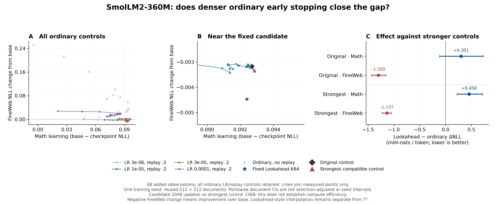
原2048对2048的FineWeb差为−0.001300；加密后变为−0.001137。候选比新的1568步对照多30.6%更新，不能声称计算效率提升。两者的FineWeb loss均低于base，准确表述是旧领域loss更低。该结果属于Lookahead-style interpolation，仍与normalized T³单列。
三条普通轨迹每32步补评，共68点；六个历史重合点权重及逐文档评分完全一致。纳入全部原普通LR、replay与早停对照。一个训练seed、已用512+512篇文档；区间未校正从多点中挑最强对照的选择效应，也不表示seed稳定性。普通LR细调现已完成，见上方新结果；下一步先做独立文档验证。新增补算1.907 GPU小时（含时间预算失败），评分1.310 GPU小时。密集对照 PDF ↗
Lookahead 对照 · 360M完整外部评分
32条曲线 · 161点 · 单seed探索相同更新步数下，出现小幅保留收益
开发集预先选定的K64、四遍数据、replay系数0.2、LR=1e-4，与普通LR=1e-5均在第2048步比较：数学NLL差+0.000301（95%文档区间−0.000116至+0.000729），FineWeb差−0.001300（−0.001433至−0.001154）。通过预定0.001保留收益及数学非劣门槛；同数据场景已测普通LR、replay和早停点中，没有两项都超过候选的点。
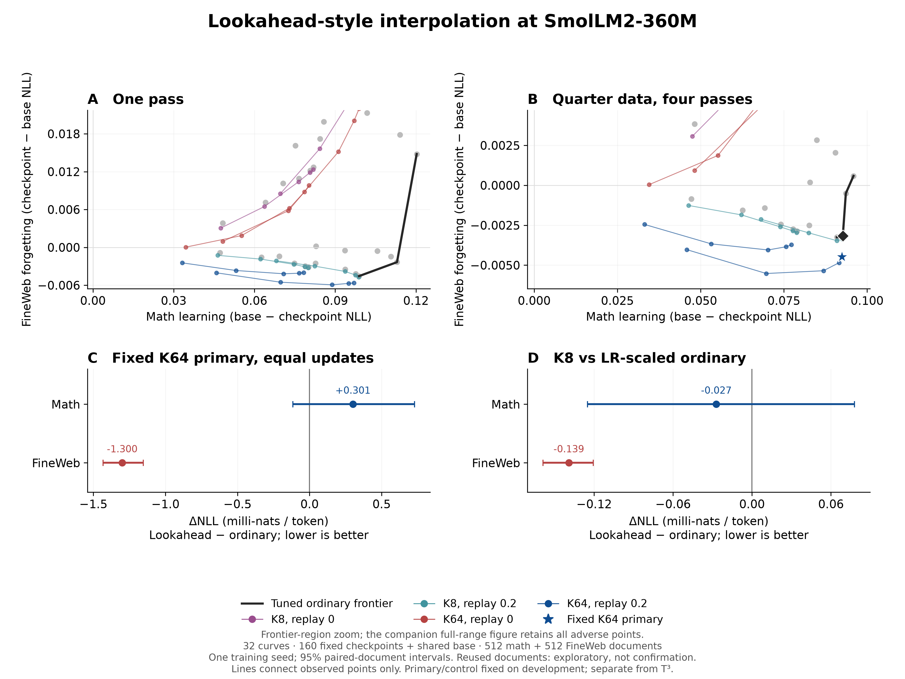
K8相对系数缩放后的普通学习率接近重合：数学−0.000027、FineWeb−0.000139；K64相对K8的FineWeb差为−0.001161。这提示长轨迹可能有额外影响，但还不是机制因果结论。不能用相同LR普通训练的较差结果充当调参前沿。该replay配置中FineWeb已低于base，准确表述是旧领域loss更低。
只有一个训练seed；每域512篇已使用文档，配对文档区间不代表seed稳定性。32条曲线各5个实测checkpoint，加一个共享360M base；完整保留one-pass、四遍数据、两种replay、普通LR与两个轨迹长度。这张图保留原稀疏评估；新增68个密集普通点的结果见上方。相同步数不自动等于计算效率提升；Lookahead与T³单列。原训练39.656 GPU小时，新增评分3.029 GPU小时。前沿放大 PDF ↗ · 全部161点完整范围 PDF ↗ · 历史开发集曲线 ↗
Wave 2a · 先确认普通 CPT 过拟合
30 条完整对照 · 单 seed · development小数据确实过拟合，但低学习率与早停仍是强对照
1/32 与 1/64 TRAIN 子集分别有 6/9、9/9 条普通训练满足预定过拟合门槛。按全部普通 LR、WD 和固定 checkpoint 选择，两者 WD 均为 1；最佳点分别是 LR=3e-6 第3354步、LR=1e-5 第839步。
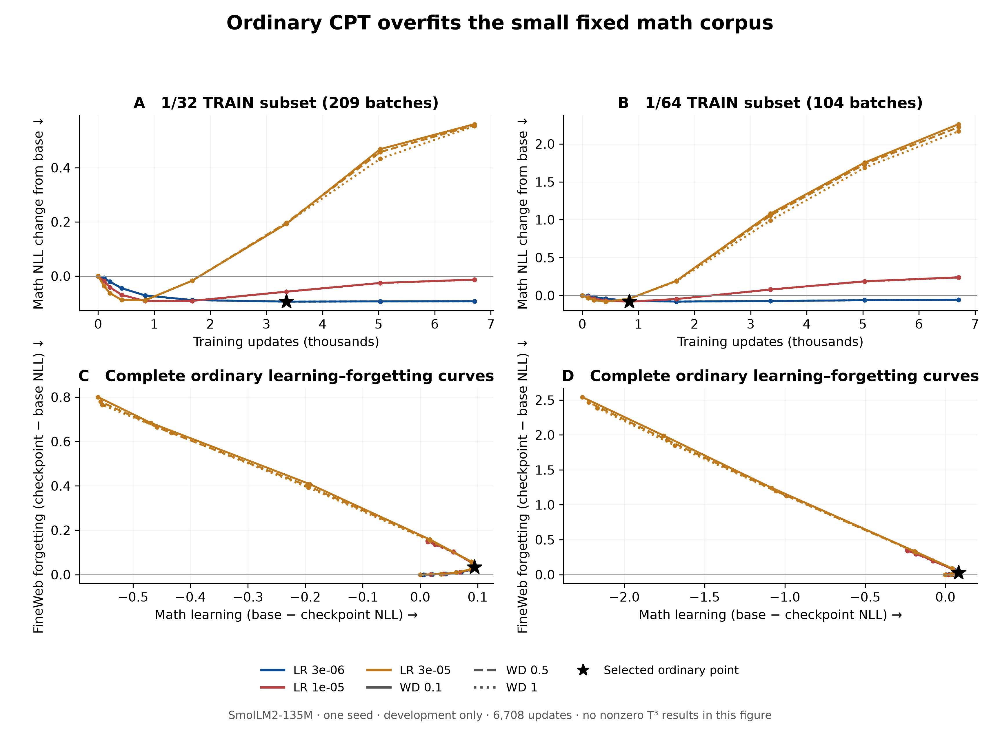
24 条非零 T³ 配置和 2 条低 LR own-zero 已准备并排入 B 队列，半径为 0.036 / 0.145 / 0.58 / 2.32。本图只确立实验前提，尚未测得这一轮 T³ 收益。候选必须接受全部普通早停前沿与 own-zero 的比较。
高 LR、小数据下，own-zero 与普通训练出现后期轨迹分离；第209步所有配对差异仍小于6e-8 NLL。不能将零半径差异计为 T³ 效应。30条对照共43.175 GPU小时，含启动与检查。完整对照 PDF ↗
轨迹反馈 CPT · 135M 完整筛选
32 次训练 · 192 个点 · development短轨迹主要表现为较小步长；长轨迹留下一个待核验信号
32 条轨迹全部完成。K=8、反馈系数 0.1 的结果与学习率缩小十倍的普通训练接近。K=64、四遍数据、20% replay、LR=1e-4，在目标域 NLL 相差不超过 0.001 的最强普通保留对照下，FineWeb NLL 改善 0.001319，目标域代价为 +0.000463。
共同512文档评分保留了小幅信号
26个选定checkpoint全部评分完成。K=64相对预先从开发集选定的普通LR=1e-5、第1536步：目标域NLL增加0.000444，FineWeb NLL降低0.001504。95%配对文档区间分别为[+0.000093,+0.000735]与[−0.001675,−0.001346]。同曝光的普通训练终点对照下，目标代价增至+0.001333，说明早停匹配很重要。
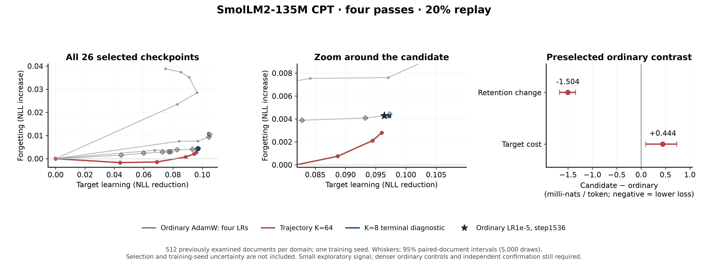
512篇此前用过的文档，单训练seed；区间不代表seed方差，未校正筛选。随后已完成密集普通对照与独立文档检验，见上方新结果。评分0.290 GPU小时。外部评分 PDF ↗
加密44个普通checkpoint后，小幅信号仍在
三个短续算片段全部完成；与原训练重合处的模型、AdamW和随机状态精确一致。目标loss的固定±0.001匹配范围内，最强普通保留对照变为LR=1e-5、第1376步：K64的数学NLL低0.000430，FineWeb NLL低0.001217。没有已测普通checkpoint同时在两域超过候选。
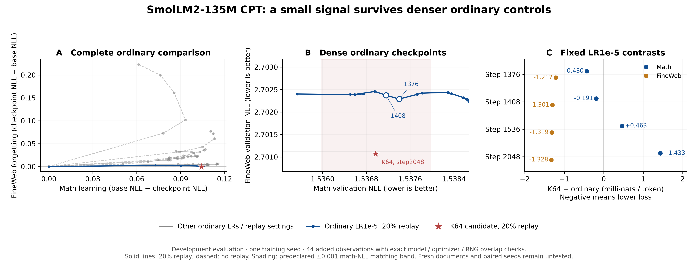
单seed开发集结果，尚非独立验证。独立文档主对照固定为第1376步；预留文档评分已完成，结果见上方。加密观测成本0.641 GPU小时，含失败启动。密集对照 PDF ↗
原来的“最近匹配点”筛选标记了两个候选，但其中 K=8 的改善可被容差范围内更强的普通对照解释；不能把较弱对照造成的差距算作收益。这里只保留 K=64 作为后续评分候选，原固定对照的训练seed验证已完成；新的普通LR精调结果及限制见上方。
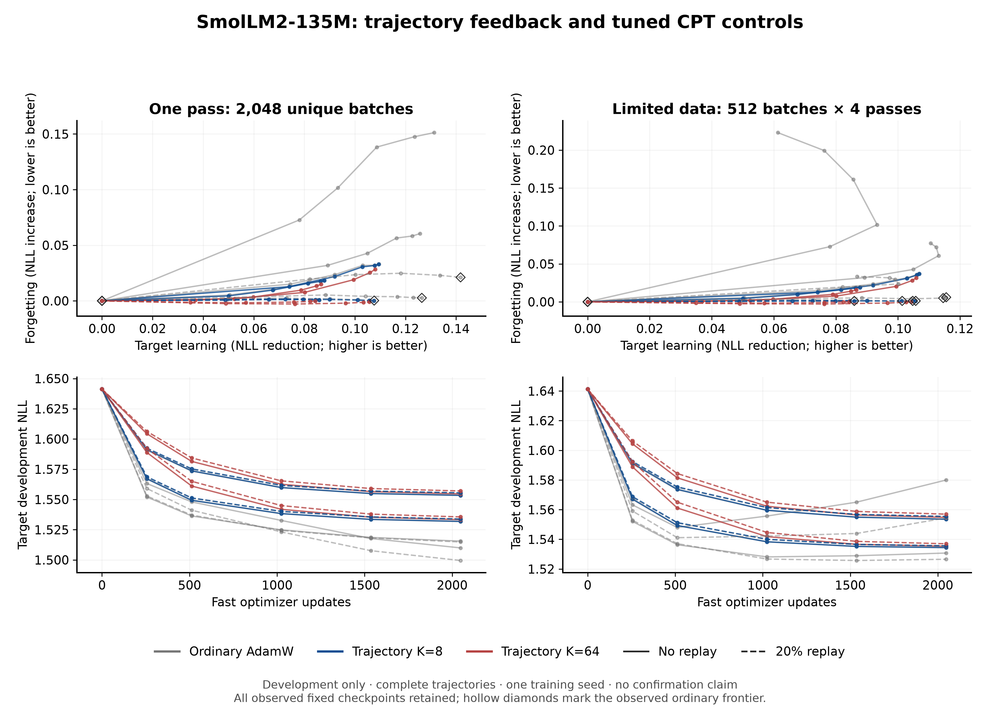
标准 Lookahead 风格轨迹插值对照，非新算法。一个训练 seed，每域128个开发窗口；无显著性或独立确认结论。已记录任务成本20.677 GPU小时，包含启动、保存和恢复检查，未把任务外 keep-warm 计为科学计算。完整曲线 PDF ↗
更广义的 T³ CPT · 完整算法比较
52 次新训练 · 240 个评分点 · 探索性精确反馈改善一阶近似，教师反馈改变学习与遗忘的权衡
52 条新轨迹全部训练和评分完成，加上 8 条已有普通训练轨迹。24 个终点候选均未通过预先固定的实用收益筛选，22 个被普通训练 checkpoint 同时在两域超过。精确 meta-gradient 在 8/8 配对中优于一阶反馈，但仍落后于各自普通训练对照。
适应教师 β=10 在多轮 CPT、LR=3e-5 时，相对同配置普通 Q 训练减少遗忘 0.01574 NLL，目标域代价为 +0.00248。这个方法也被不用 replay 的普通 Q 半程 checkpoint 同时超过两项指标；因此不能据此声称在相同学习效果下更少遗忘。
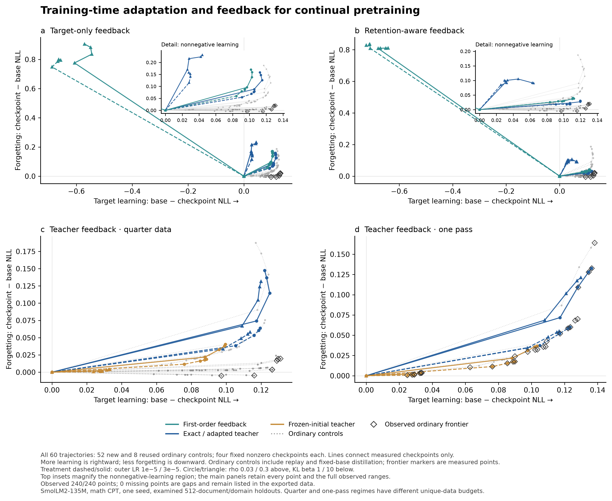
横轴越右学得越多，纵轴越低忘得越少。菱形是实际测得的普通训练前沿点，连线仅连接固定 checkpoint。上排 inset 放大非负学习区域，原图仍保留全部点。完整曲线 PDF ↗
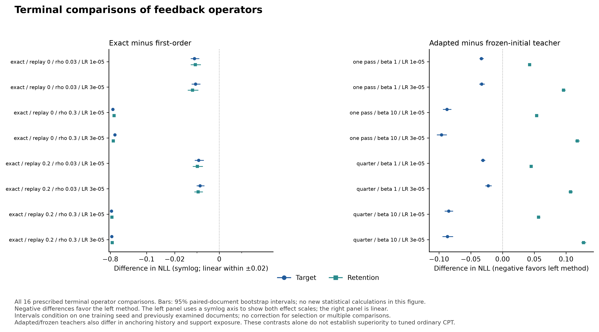
SmolLM2-135M、数学 CPT、单训练 seed、每域 512 篇已观察文档、5,000 次配对文档 bootstrap；区间不代表训练 seed 方差，未校正选择和多重比较。新52条训练 205.640 GPU小时、评分 2.052 GPU小时，含记录中的先前尝试。父 agent 核验完整数据与图，未新增独立结果审查。尚无计算效率或下游任务收益结论。反馈比较 PDF ↗
反馈放大与数据约束 · 完整后续结果
16 次训练 · 96 个评分点 · 探索性标准反馈的增量仍小，10 倍反馈发生训练崩溃
这轮固定网格覆盖一次遍历、四分之一数据重复四轮、十六分之一数据重复十六轮。没有终点候选通过预先规定的实际收益及调好普通训练基线筛选。四次 10 倍反馈运行的目标域和 FineWeb NLL 均超过 100；原因尚未被机制实验证实。
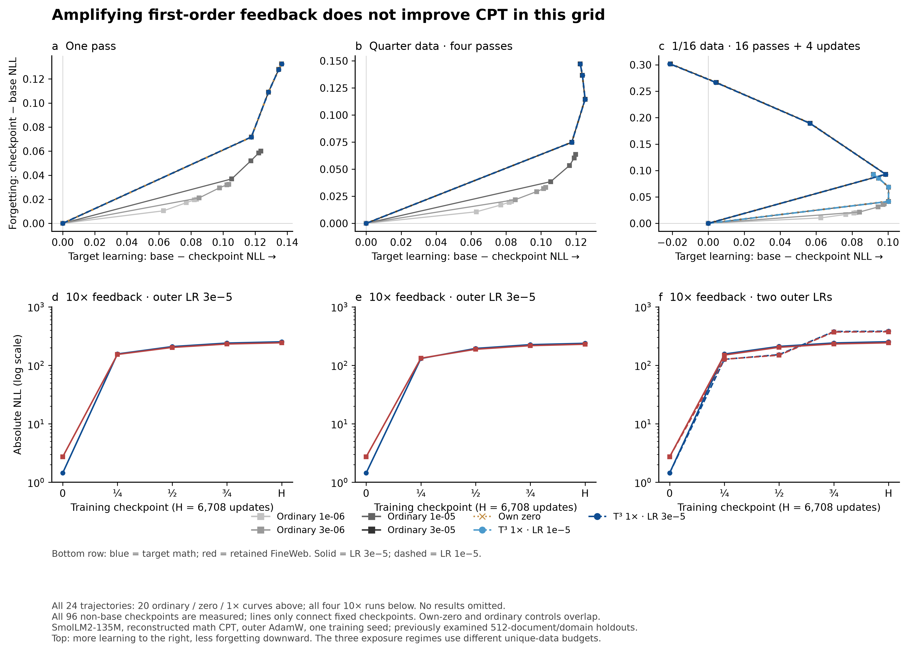
包含 16 条新轨迹和 8 条已有普通训练轨迹。上排横轴越右学得越多、纵轴越低忘得越少；下排为绝对 NLL 的对数轴。连线仅连接实际 checkpoint。完整曲线 PDF ↗
相对自身零适应对照的微小收益，不代表超过调好的基线
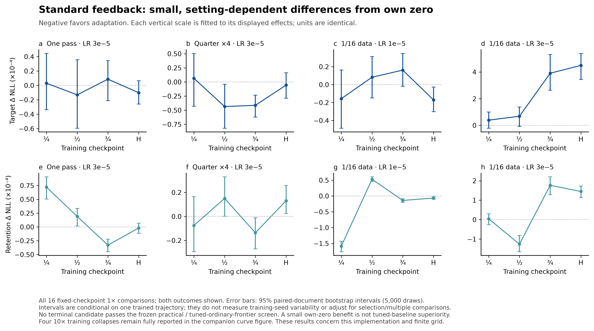
单训练 seed、每域 512 篇已观察文档、5,000 次配对文档 bootstrap；区间不代表 seed 方差，未校正选择和多重比较。数据及图由主 agent 核对，未新增独立图审。新增训练 34.300 GPU小时、评分 0.805 GPU小时。T³ 不局限于此实现：新的目标、精确梯度和适应教师蒸馏实验已完成，见上方最新结果。差值图 PDF ↗
局部机制 · AdamW 如何改变适应梯度
64 个状态 · 512 个 TRAIN 三元组 · 已核验原始梯度差异存在，动量和自适应更新使相对差异缩小
相对向量差异的平均值：原始 query 梯度 10.53%，裁剪后 10.49%，一阶动量 3.41%，AdamW 自适应分量 1.23%。实际存储的 FP32 参数位移差异为 3.69%，受舍入影响，不能与自适应分量混同。这里测的是相同权重与旧动量下的一次局部更新。
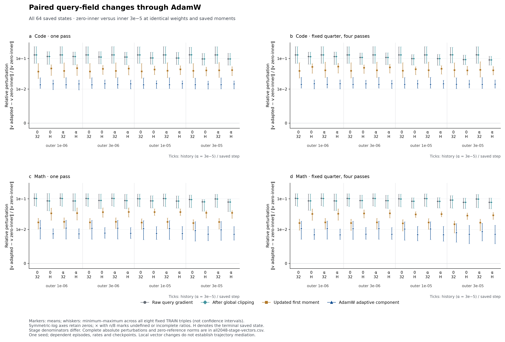
每个阶段使用自己的 zero 向量作为分母。裁剪后到自适应分量的相对差异比值平均为 0.127；512 个记录全部小于 1。这些记录彼此依赖，不代表 512 个独立重复实验。完整向量图 PDF ↗
局部 loss 差异很小，不能当作实际 CPT 成功
原生 AdamW 的平均 FineWeb NLL 差值仅 −5.63×10⁻⁸，512 个记录中 249 个完全相同。移除自适应缩放或动量的对照使平均遗忘差异变大，同时平均 query loss 变差；它们没有证明可以同时学得更多、忘得更少。
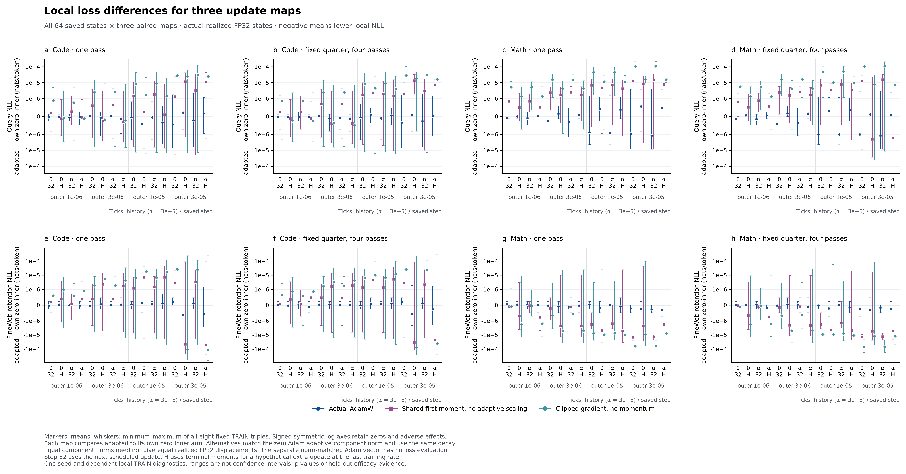
两种对照按 zero Adam 自适应分量的范数校准，共用权重衰减；不保证实际 FP32 位移相等。仅观察 warmup 的第32步与末尾状态，末尾测的是假想额外一步；不能据此解释整个训练轨迹或 Muon。新增成本 1.699 GPU小时。下一步先检查固定内层步长下放大梯度修正的局部响应，再决定训练范围。完整局部 loss 图 PDF ↗
最新 CPT 证据 · 外层 AdamW 与实际早期 checkpoint
64 次训练 + 112 次评分 · 已核验普通训练的半程 checkpoint 已超过此前候选
普通 AdamW 1e-5 在半程时，目标域与 FineWeb NLL 都低于此前六个 SGD 0.15 适应终点，代码和数学结果一致。这是实际评估过的 checkpoint，不依赖曲线插值。此前相对自身 zero 的 0.005–0.011 NLL 遗忘收益仍然成立，但不足以证明优于调好的普通训练。
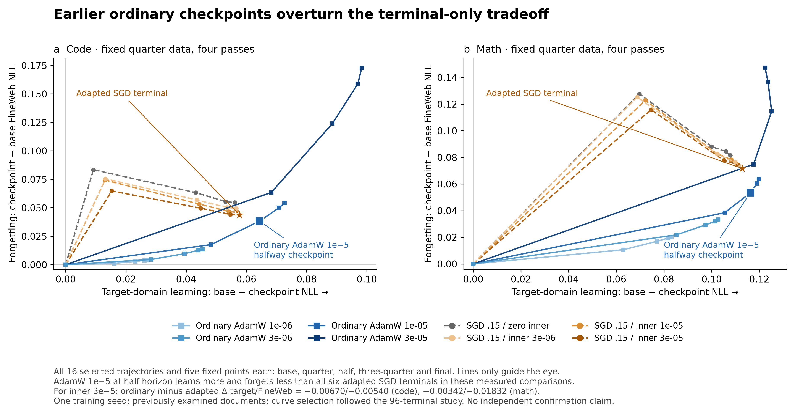
横轴向右表示目标学习更多；纵轴向下表示遗忘更少。每域 8 条轨迹、各 5 个固定点，连线只辅助阅读。相对内层 LR 3e-5 的终点，普通半程的目标域／FineWeb NLL 差值为代码 −0.00670／−0.00540、数学 −0.00342／−0.01832。完整曲线 PDF ↗
接上外层 AdamW 后，适应增量很小
全部 48 个适应对比的两项 NLL 变化均小于 4×10⁻⁵；最大遗忘改善为 3.64×10⁻⁵。13 个配置两项点估计改善，5 个两项边际文档区间有利，但没有配置达到预先规定的 0.001 筛选阈值。16 组 zero 与同配方普通训练的逐文档得分完全一致。
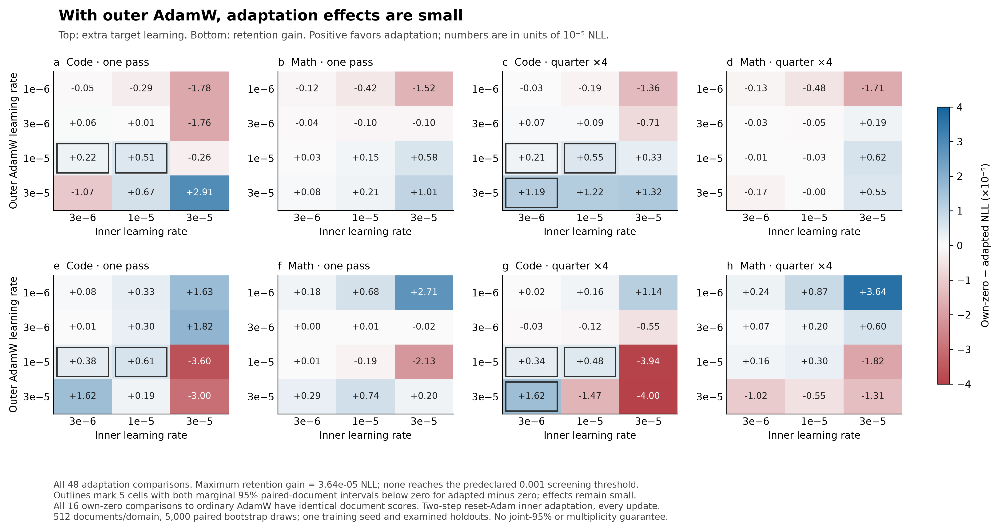
单训练 seed；每域 512 篇已观察文档；5,000 次配对文档 bootstrap，不代表训练 seed 稳定性，未校正选择与多重比较。一次遍历拥有 4 倍独立数据。新增训练 125.783 GPU小时、评分 1.528 GPU小时；此前调参成本另计。上述局部变换诊断现已完成，见最新机制图；它不支持自动加 seed 或宣称 Muon 机制已解释。全部增量 PDF ↗
前一轮 CPT 证据 · 完整 96 组
已核验 · 单 seed 探索自身对照出现收益，但普通训练仍是关键门槛
固定四分之一数据训四遍、外层 SGD 0.15 时，代码和数学各三个相邻内层学习率相对 own-zero 同时改善目标域与遗忘，遗忘改善约 0.005–0.011 NLL。后续实际早期 checkpoint 评估表明，代码与数学六个候选均被同场景普通 AdamW 1e-5 的半程模型超过。以下历史终点图完整保留；以新增曲线结果为当前结论。
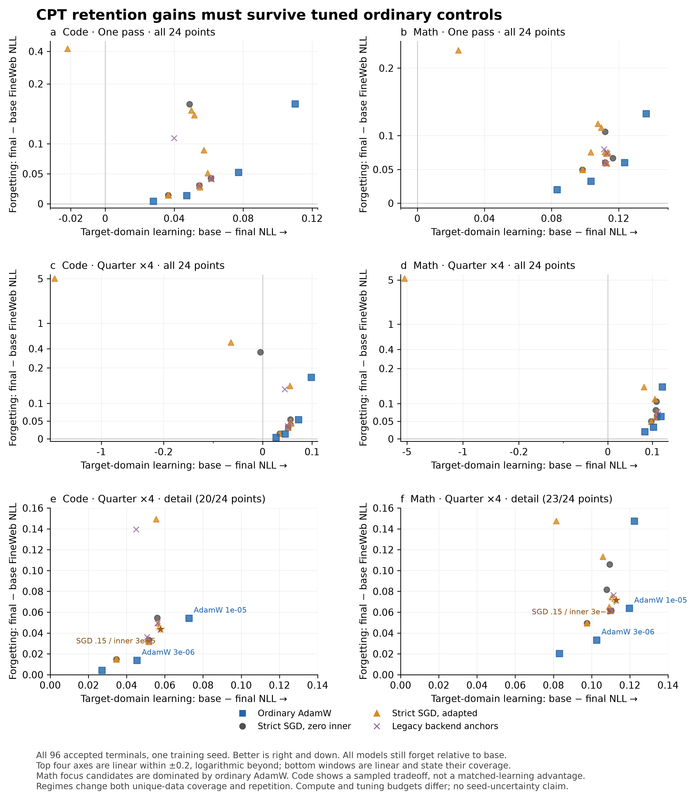
全图保留 96 个终点及明显变差的配置；上四图在 ±0.2 内为线性轴、之外为对数轴。下两图是线性放大，代码显示 20/24 点、数学 23/24 点，其余仍在上图。所有模型相对 base 仍有遗忘。不同数据场景的独立数据量、计算和调参预算不同。终点图 PDF ↗
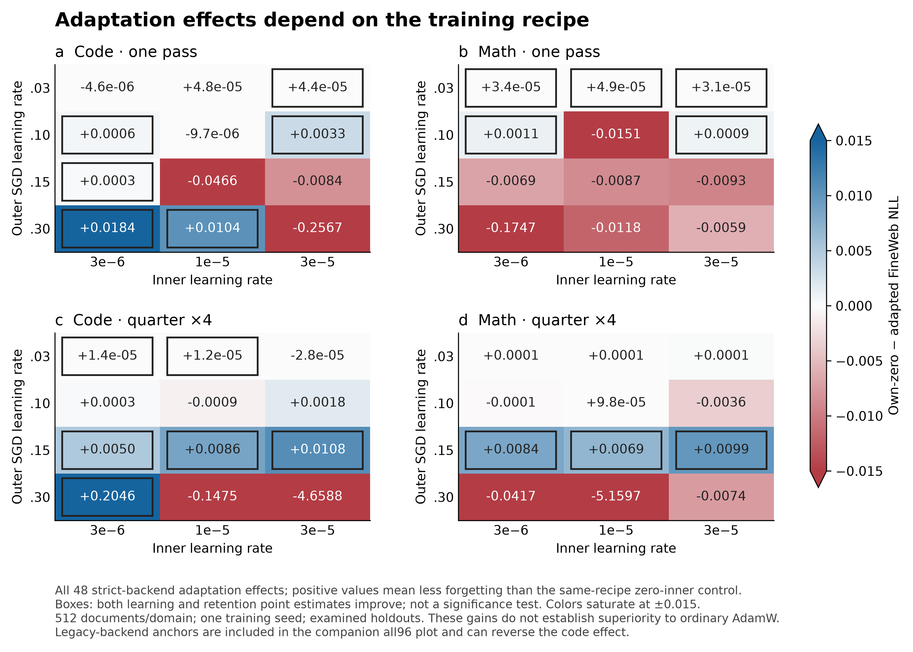
颜色在 ±0.015 饱和，数字显示完整差值。相对较差 own-zero 的大幅改善不能代替普通基线比较。历史后端已令一个代码配置的效应反转。每域 512 篇已观察文档、单训练 seed；图展示点估计，不代表训练 seed 稳定性。后续 64 组外层 AdamW 与实际早期 checkpoint 已完成并核验，见上方最新结果。完整适应效应 PDF ↗
机制诊断 · 方向与更新长度
32 个 checkpoint · 已核验数学域有局部方向贡献，代码域仍未解释
从相同 checkpoint 出发，将适应后的外层更新重缩放到零内层更新的范数。数学域关注区域的平均局部收益仍保留 87–99%；代码没有同样的局部收益，不能据此解释其最终训练结果。
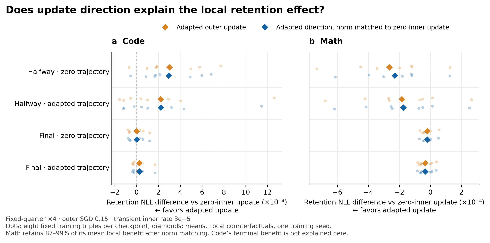
细点为每个 checkpoint 的 8 组固定训练文本，菱形为均值。对照是零内层适应后的非零 SGD 更新。负值有利，轴单位为 10⁻⁴ nats／预测 token。这是局部 TRAIN 损失测量，不能直接证明持久遗忘或泛化的因果机制。局部比较 PDF ↗
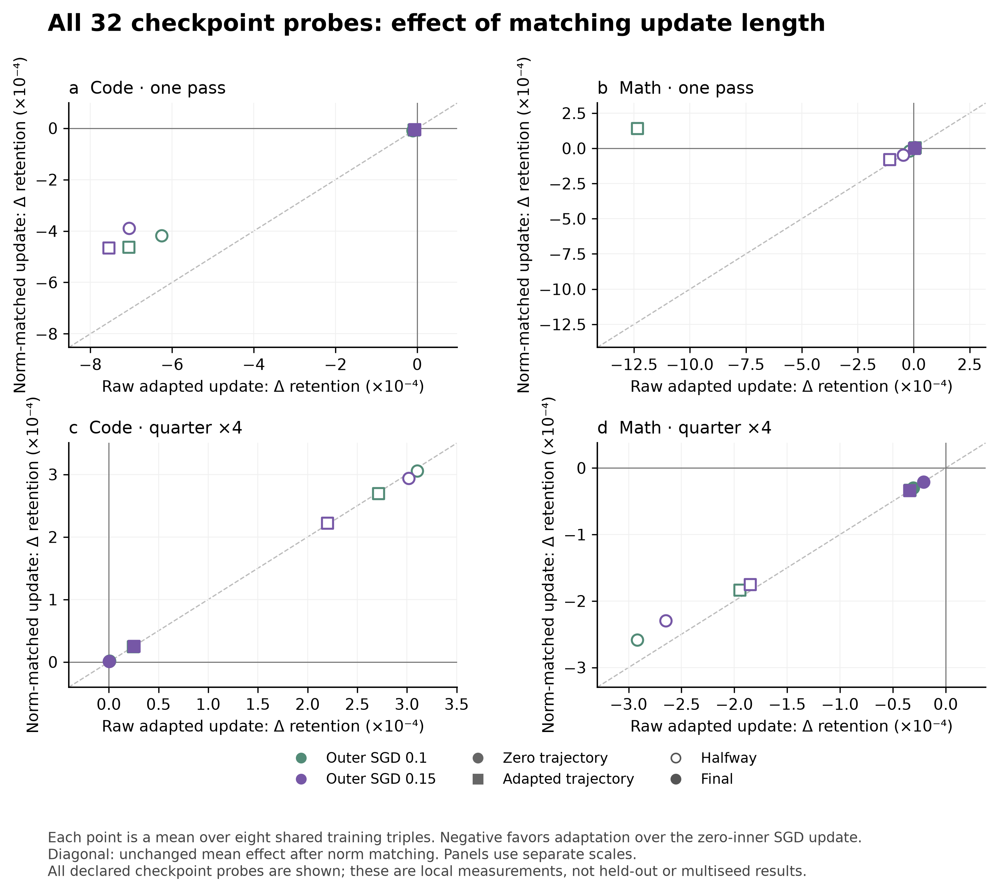
全图保留 32 个 checkpoint 均值；各面板尺度不同。一个训练 seed，重复使用的 8 组文本并非独立训练重复。全部局部探针 PDF ↗
135M CPT · 完整外部结果
C45 · 已核验 · 探索性代码有小幅收益，数学没有复现同样效果
相对各自的零适应对照，代码 10/16 组终点在学习和遗忘两项点估计上均改善；数学 16/16 组均变差。最大的遗忘改善为 0.000349 NLL。更大的跨配置差距涉及外层优化器、学习率和所选 checkpoint 的训练量，不能归因于适应。
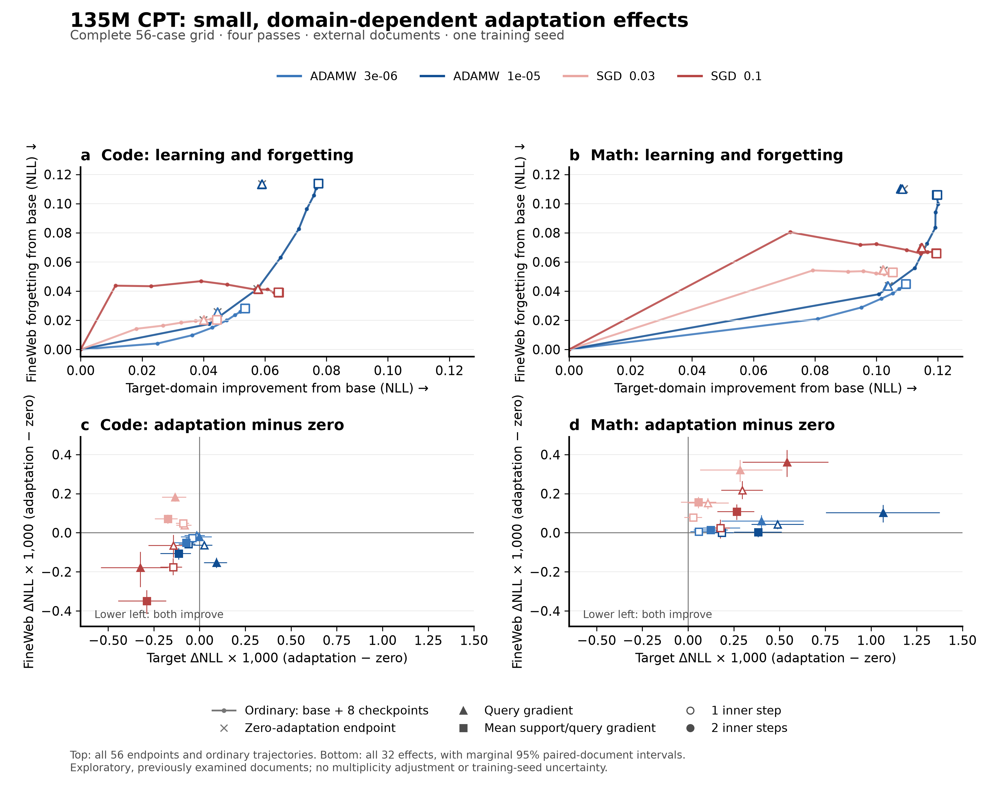
上方包含全部 56 个终点，下方包含全部 32 个适应增量；未隐藏不利结果。单训练 seed；重复使用的外部文档；95% 配对文档区间未校正多重比较，也不代表训练 seed 的不确定性。下载矢量 PDF ↗
135M CPT · 同配比 replay
C49 · 已核验 · 探索性遗忘增量方向一致，幅度很小
全部 8 组适应相对自身零适应对照的 FineWeb 区间均有利，最大改善 0.0000562 NLL；4 组目标域区间不利，没有一组两项区间同时有利。相同学习率的普通训练对照给出相同定性结论。
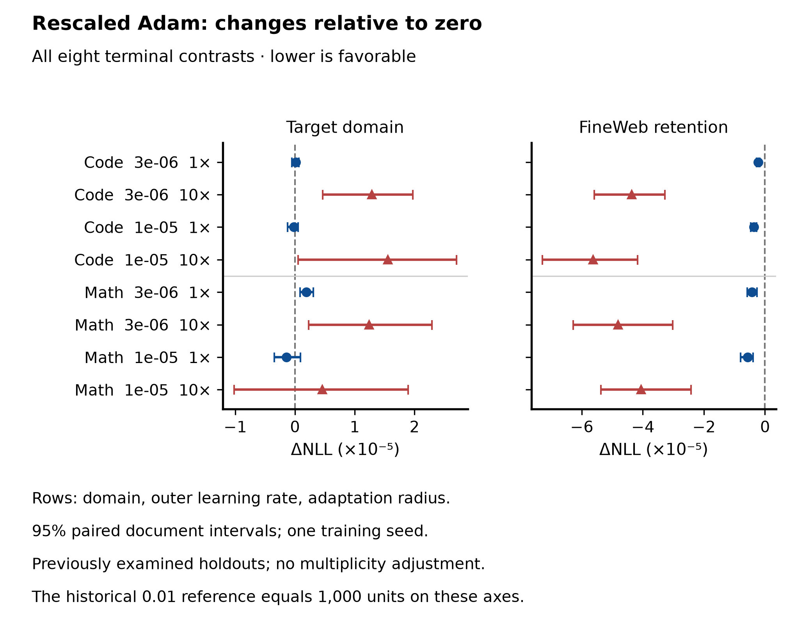
上图完整展示 8 个配对终点；负值有利。轴单位为 10⁻⁵ nats／预测 token。区间来自每域 512 篇外部文档的 5,000 次配对 bootstrap，未校正多重比较；单训练 seed，文档区间不代表训练 seed 不确定性。配对差异 PDF ↗
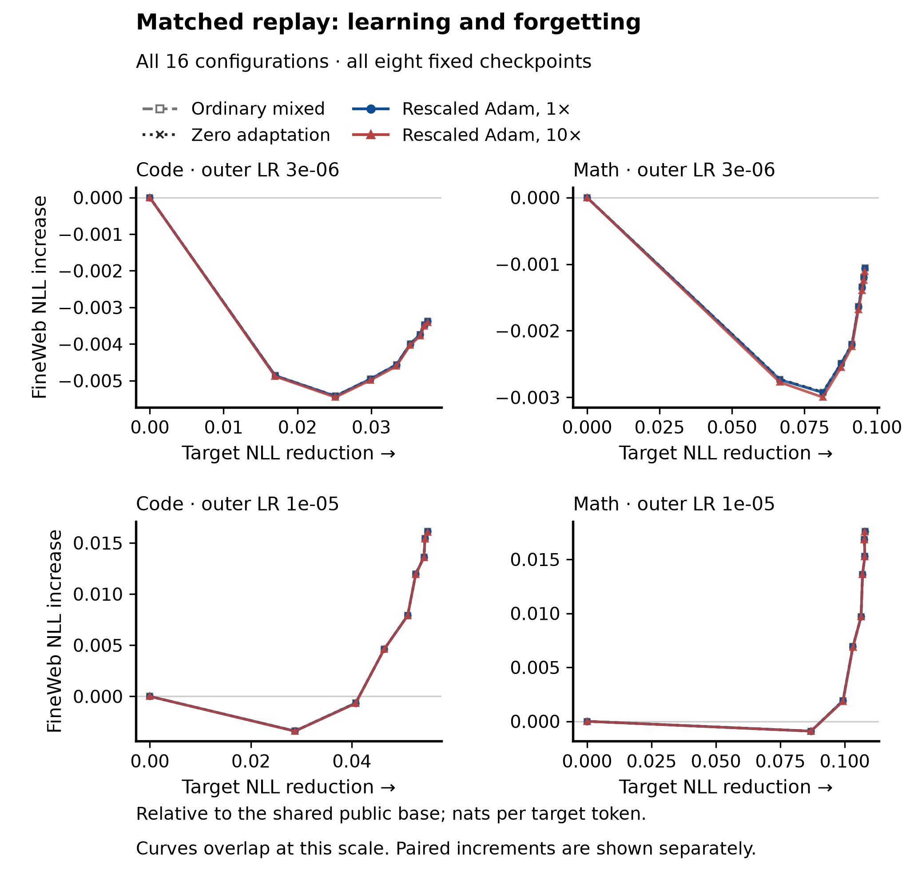
每步 4 条目标域与 4 条 FineWeb 训练序列，固定混合数据重复四遍；图含全部 16 组、训练前起点和 8 个固定 checkpoint。横轴向右表示目标域学习更多，纵轴向下表示 FineWeb 遗忘更少。各配方曲线几乎重合。该组目标数据暴露量是此前 target-only 组的一半，跨组比较不能单独识别 replay 的效果。完整轨迹 PDF ↗
135M CPT · normalized 半径缩至 0.1×
C50 · 已核验 · 探索性减少大半径的损害，留下小幅、依赖配置的收益
4/4 个设置相对 1× 半径的目标域与 FineWeb 区间均改善。相对自身 zero，只有 2/4 两项区间同时有利；最大终点遗忘改善 0.00008857 NLL。预定的学习匹配比较仅 2/4 通过，数学较大 LR 的匹配遗忘反而差 0.002040 NLL。
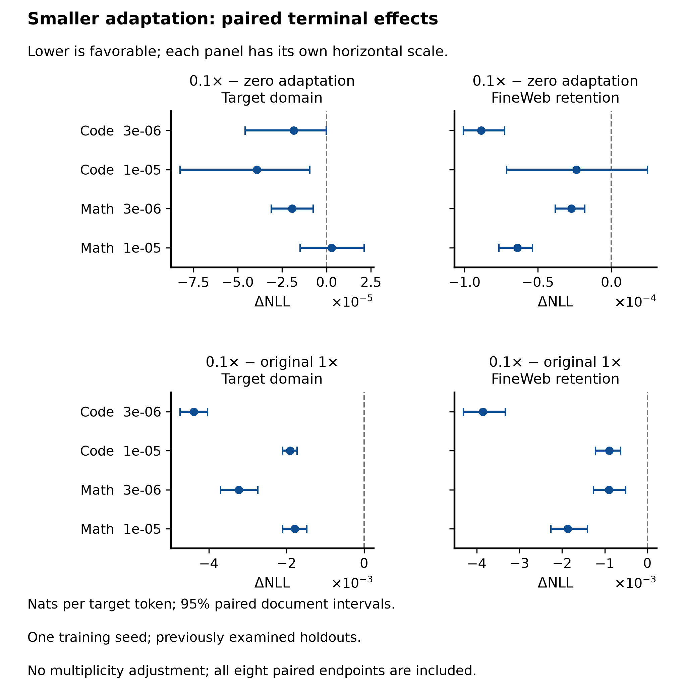
负值有利。上下排使用不同横轴尺度；单位为 nats／预测 token。每域 512 篇文档、5,000 次配对 bootstrap；单 seed、已观察 holdout，未校正多重比较。代码较小 LR 的目标域区间上界接近零。差异 PDF ↗
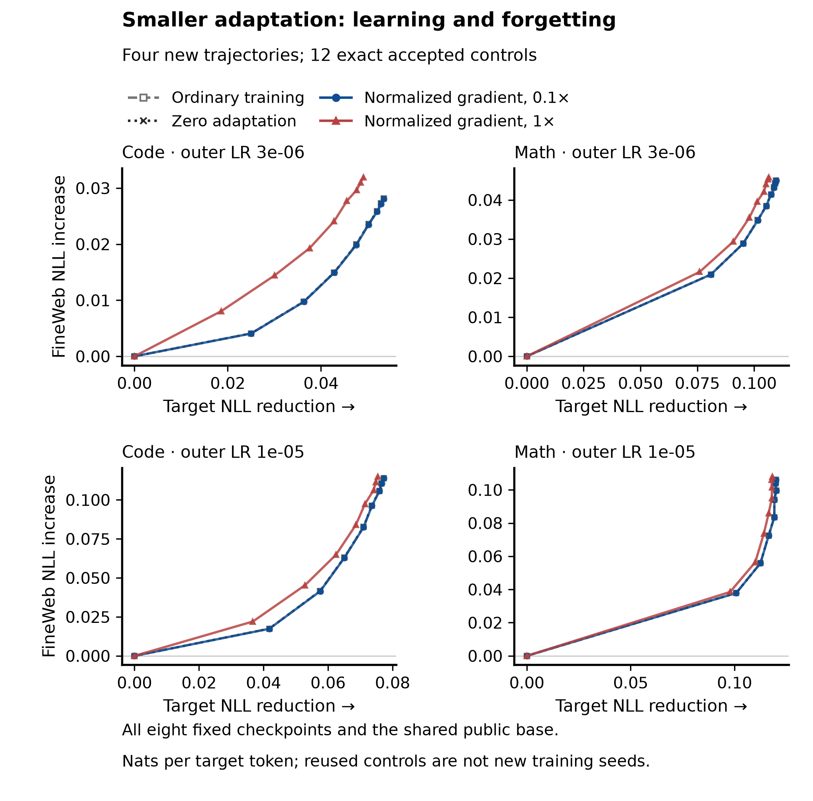
包含全部 4 条新训练与 12 条复用对照，8 个固定 checkpoint 及公共 base。4条新训练及评分共 5.92 GPU小时。该结果没有恢复历史 0.01 量级改善，也不能独立确认曲率机制。完整轨迹 PDF ↗
实验计划 · 按研究价值排序
术语与读图说明
- Own-zero / split-zero
- 保留 support/query 分割与执行路径，临时适应幅度设为零，用来测量适应本身的增量。
- Retained-mean
- 原始 support 梯度与适应后 query 梯度各占一半。
- Query-only
- 外层只使用 query 梯度，因此必须和自己的 query-only zero 对照比较。
- Generalization 与效率
- 这里主要比较相同数据暴露下的学习与遗忘。额外内层步数会增加工作量，不能由这组结果直接推断计算加速。
- 结果的层级
- 计划 → 已准备 → 运行 → 训练完成 → 外部评估 → 科学接受。当前曲线来自 development，单 seed 的文档区间不等于 seed 不确定性。